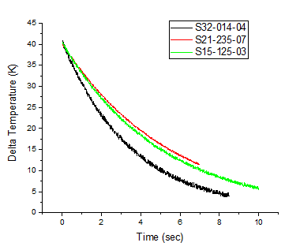
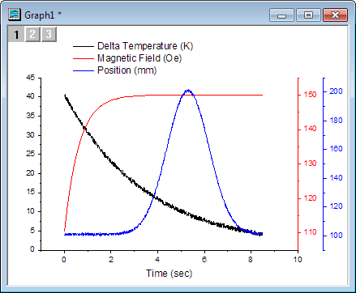
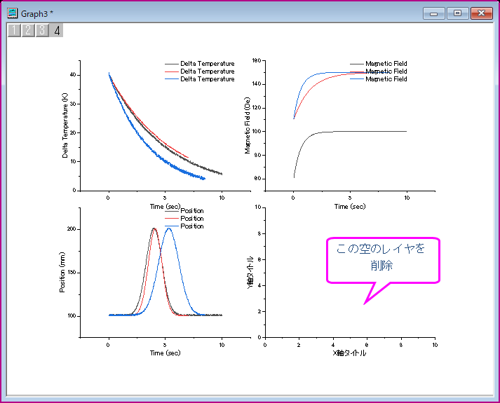

グラフ作成
Create-Graph
概要
Originにはテンプレートライブラリーがあります。これらのテンプレートを修正したり、自分専用のグラフを作成することができます。Originでグラフを作成するのは、目的のデータを選択して、メニューまたはツールバーから目的のグラフを選択するだけです。作図のセットアップダイアログは、複数のブックやシートからデータをプロットするといったグラフの作成を柔軟に行うことができます。
Origin2016から、さらに使いやすくなった「クローン」テンプレートが利用できるようになりました。これらのテンプレートは「スマートプロッティング」という機能の為にデザインされており、複雑なレイヤ階層があったり、単純な選択では特定できないソースデータに対しても、グラフを複製することが出来ます。ユーザー定義グラフテンプレートから作図するチュートリアル を参照し、標準とクローン両方のテンプレートを保存して利用する方法を演習します。
学習する項目
このチュートリアルでは、以下の項目について解説します。
- ワークシート内のデータを選択し、プロットを素早く作成する
- コンテキストメニューを使用してデータプロットのX/Yデータを変更する
- 既存のグラフ対してデータを追加/削除する
- 作図のセットアップを使用して複数のシートからデータをプロットする
- ラベル別のプロットグループをプロットする
データを選択して、すばやくプロットを作成する
- 複数ファイルに接続ボタン
 をクリックしてダイアログを開きます。複数のASCIIファイルをインポートするには、データコネクタでCSVを選択します。
をクリックしてダイアログを開きます。複数のASCIIファイルをインポートするには、データコネクタでCSVを選択します。
- ファイル名入力ボックスの隣の...ボタンをクリックします。ダイアログを開き、\Samples\Import and Export\ にある、S15-125-03.dat, S21-235-07.dat, S32-014-04.dat を選択し、ファイルの追加ボタンをクリックして下部パネルに追加します。OKをクリックし、ファイル名入力ボックスに追加します。
- 同一ブックにチェックを入れます。
- OKをクリックします。インポート結果は次のようになります。
- ワークシートS32-014-4をアクティブにします。 3つのレイヤを持つグラフを作成するには、3つのY列－Delta Temperature, Magnetic Field, Position－を選択し、「作図：複数区分/軸：3Ys Y-YY」を選択します。 Originは自動的にワークシートのY列と結びついたX列に対してプロットするので、Time列を選択する必要はありません。

プロットのX/Yデータを変更する
前のセクションで使用したものと同じワークシートを使用します。
- B列を選択して折れ線
 ボタンをクリックし、折れ線グラフを作図します。
ボタンをクリックし、折れ線グラフを作図します。

- データプロット上で右クリックしてYを変更を選択し、フライアウトメニューからC列データを選択します。
- 全てのデータを表示するために、グラフの再スケールに関するメッセージが現れた場合、はいを選択してOKを押すと自動で再スケールされます。
- プロットは下図のように更新されます。

 | このコンテキストメニューでは、現在のグラフデータのうち、XまたはYデータを現在のプロジェクト内にある他の列データに変更できます。この列は、列の指定にかかわらず、現在のXまたはYデータ列以外の列になります。列を選択メニューを選択し、現在のフォルダもしくはプロジェクトから列を指定します。
ワークシートを変更 コンテキストメニューを使用して現在のXとYのデータを、列の指定と列のショートネームを問わず、現在のワークブックの他のワークシートで同じ列インデックスを持つ列にすることもできます。
|
Note: レイヤ内容や作図のセットアップダイアログを使用したデータ変更も可能です。
既存のグラフにデータを追加し、凡例を更新する
ドラッグアンドドロップで追加
- 上の例の3つのデータがあるブックに戻ります。
- 最初のシートからDelta Temperature列(列B)を選択し、「作図：Basic 2D：折れ線」を選択して、折れ線グラフを作成します。
- ワークシートに戻ります。それぞれ2つのシートが残るように、Dalta Temperatureの列を選択してマウスカーソルをその列の端に位置づけ、カーソルの形状が
 に変わるようにします。
に変わるようにします。
- グラフページまでそのままカーソルを移動し、ドラッグ＆ドロップします。2つのデータを追加されると下図のようになります。
- データを追加したら、デフォルトでOriginワークスペースの右上隅にあるオブジェクトマネージャパネルを展開します（必要に応じて、表示：オブジェクトマネージャから再表示できます）。レイヤ1の下の最後のプロットを右クリックし、グループ終了に設定を選択し、これら3つのデータをすべてグループ化します。
- グループ化の機能を使うとグループ内の各データプロットは異なる表示属性(線の色＝黒、赤、緑...シンボル形状＝正方形、円、三角形....)になるので、プレゼンテーション用のグラフが素早く作成できます。
- グラフ操作：凡例：凡例の更新を選択し、legendupdate Xファンクションダイアログを開きます。 凡例の自動更新モードをカスタムにします。 凡例のカスタムフォーマットに@WSと入力します。
- OK をクリックすると、凡例には各データプロットのワークシート名が表示されるようになります。
- 
| ドラッグアンドドロップででプロットを追加した場合のデフォルトグラフタイプは現在の設定で、アクティブなプロットと同じグラフが作図されます。このオプションは変更可能です。作図形式を変更する場合、メインメニューの環境設定：オプションを選択してダイアログを開き、グラフタブのドラッグ＆ドロップ時の作図デフォルトドロップダウンから選択します。
|
ミニツールバーのグラフ作図のためにコピーで追加
このセクションでは、ミニツールバーのグラフ作図のためにコピーボタンを使って既存のグラフに新しいプロットを追加します。
- 上の例の3つのデータがあるブックに戻ります。
- 最初のシートS15-125-03 からDelta Temperature列(列B)を選択し、作図：基本の2Dグラフ：折れ線を選択して、折れ線グラフを作成します。
- ワークブックに戻り、2番目のシート S21-235-07 をアクティブにします。Delta Temperature列をクリックし、ミニツールバーを開きます。グラフ作図のためにコピーボタンをクリックします。

- グラフウィンドウをアクティブにして、 Ctrl+P キーを押しすと、ピーした列のデータが折れ線として既存のレイヤにプロットされます。
- 残りのシートS32-014-04について、データセットをコピーして既存のグラフに貼り付けるプロセスを同様に行い、S32-014-04のDelta Temperatureの新しい折れ線を追加します。
レイヤ内容ダイアログを使用
レイヤ内容ダイアログはアクティブなレイヤに対して、データセット(データプロット)の追加および削除の際に使用されます。Origin2016から、複数レイヤのグラフに対しても、プロットをより簡単に追加削除出来るように、このダイアログを閉じなくても、レイヤを切り替えることが出来るようになりました。試しに、このチュートリアルの最初の演習で作成した3つのレイヤを持つグラフを戻ります。
- 
最初の演習では、ワークシートS32-014-04のデータから作図しました。この演習では、ワークシートS32-014-04のデータと、ワークシートS21-235-07のデータを交換します。
- グラフウィンドウ左上のレイヤ1アイコンを右クリックし、レイヤの内容を選択します。
- 開いたダイアログの左上にあるドロップダウンリストをクリックし、フォルダ内のワークシートを選択します。
- （もし表示されていなければ）左側パネルのヘッダー上で右クリックして、どのワークシートがどのワークブックのデータセットにあるかが分かるように、ブック名をオフにし、シートを選択して表示します。ワークシート名によってデータセットが分けられるように、ヘッダーのシートをクリックします。

- レイヤ内容の右側パネルで、ワークシートS32-014-04のDelta Temperature を選択し、グラフのレイヤ1からプロットを削除するために、プロットを削除 tのボタンをクリックします。
- 左側のパネルで、ワークシートS21-235-07からDelta Temperatureを選択し、レイヤ1に新しいプロットを追加するために、プロットを追加
 ボタンを押し、適用をクリックします。データセットが入れ替わりました。
ボタンを押し、適用をクリックします。データセットが入れ替わりました。
- ダイアログの上部にあるレイヤ(1)のボタンをクリックし、他のレイヤ＞レイヤ2を選択します。レイヤ(2)を選択します。
- 現在あるMagnetic Field のデータセットを削除を再度行い、ワークシートS21-235-07のMagnet Fieldのデータセットに入れ替えて、適用をクリックします。
- レイヤ(2)のボタンをクリックし、他のレイヤ＞レイヤ3を選択します。ワークシートS32-014-04のPositionデータセットと、ワークシートS21-235-07のPositionデータセットを交換を再度行い、適用ボタンを押してダイアログを閉じます。
作図のセットアップを使ってグラフを作成する
作図のセットアップダイアログボックスは、グラフの作成、プロットタイプの変更、グラフへのプロットの追加または削除、プロットのグループ化またはグループ解除、およびプロット範囲の編集など、さまざまなプロット作業に役立ちます。
- ワークブックに戻り、どのデータも選択されていないことを確認します。ワークシートがアクティブであるかどうかは関係ありません。重要なことは、どの列も選択していないことです。
- メニューから「作図：複数区分/軸：4区分」を選択します。 ワークシートデータが選択されていない場合、Originは作図のセットアップダイアログを開くので、ここでプロットしたデータを選択して作図することができます。
 ボタンをクリックして上部パネルを拡張します。Ctrlキーを押しながら、3つのワークシートを選択します。 また、3つのワークシートすべてがハイライト指定されるように選択項目をクリックしてドラッグすることもできます。
ボタンをクリックして上部パネルを拡張します。Ctrlキーを押しながら、3つのワークシートを選択します。 また、3つのワークシートすべてがハイライト指定されるように選択項目をクリックしてドラッグすることもできます。
- 中央のパネルには、3シートすべての共通の列が表示されます。 この場合、3つのシートすべてに一致する列名を持つ同様のデータがあります。このパネルの右上にある ボタン
 をクリックし、同じ列ロングネームでプロットできる列をリスト表示します。 このモードは、XY属性のチェックボックスにチェックを付ける必要がないので、簡単です。
をクリックし、同じ列ロングネームでプロットできる列をリスト表示します。 このモードは、XY属性のチェックボックスにチェックを付ける必要がないので、簡単です。
- 表示されていなければ、ダイアログの下側パネル、プロットリストを開きます。 レイヤ1 がハイライトされています。 中央のパネルにあるDelta Temperature を選択して、追加ボタンをクリックします。ステップ3で既に3つのワークシートを選択しているので、これは3つのワークシートそれぞれからDelta Temperature列をLayer1に追加します。
- このステップを繰り返し、Magnetic Fieldと全てのPositionをそれぞれレイヤ2およびレイヤ3に追加します。
各レイヤで、3つのデータプロットは自動的にグループ化されます。
- OKボタンをクリックして、グラフを作成します。

- それぞれのレイヤに対して作成されるデフォルトの凡例は、このグラフではあまり意味がないことがわかります。Originの凡例オブジェクトはカスタマイズしやすいので、まずはデフォルトの凡例を修正します。凡例オブジェクトで右クリックして、ショートカットメニューから「凡例：凡例を更新」を選択します。
- 開いているダイアログで、ドラッグ＆ドロップによる のステップ８と同じ設定を行います。凡例カスタムフォーマットのシンタックス @WS は、 LabTalk 置換表記 で表される、個々のプロット線が含まれているワークシートの名前です。
- グラフページには空のレイヤが追加されています。 レイヤを削除するには、そのレイヤを選択し、キーボードのDeleteキーを押します。次のチュートリアルで使用するグラフウィンドウを削除しないように注意してください。

| 上のグラフでは、それぞれのレイヤの凡例が同じになっています。この内2つは削除することもできます。または、下の凡例の更新 ダイアログで、1つの凡例で全てのグラフの内容を表示するように設定します。
設定が適用されたら、凡例のテキストをCtrl +ダブルクリックすると、インプレース編集を行うことができます。 あるいは、コンテキストメニューから凡例ボックスを右クリックしてプロパティを選択し、テキストオブジェクトダイアログで詳細な編集も可能です。
|
グループ化データとしてプロットする
データにカテゴリデータの列が含まれている場合や、下位のデータと同様に、ある種のネストされたデータのサブグループ化を特徴付ける複数の列が含まれている場合、
データを次のようにプロットすることができます。
トレリスプロット
Origin 2017から、1つのレイヤーがM x N 個のパネルを持つトレリスプロット を導入しました。
- 新規のワークブックを作成します。
- 新しいワークブックを用意します。ヘルプ: フォルダを開く: サンプルフォルダを選択して、サンプルフォルダを開きます。このフォルダ内のStatisticsサブフォルダにある2010.dat ファイルを探します。空のワークシートにファイルをドラッグアンドドロップしてインポートします。
col(H)からcol(J)をハイライト選択し、作図：基本の2Dグラフ：トレリスプロット メニューを選択します。グループ化プロット ダイアログが開きます。水平グループ変数としてcol（ "City"）を選択し、パネルの垂直グループ変数としてcol（ "Gender"）を選択します。
OK ボタンをクリックして、グラフを作成します。X軸上でクリックしてミニツールバーを開き、軸スケールボタンを選択します。開かれたダイアログで、水平方向の軸の開始と終了を-10と90に設定します。するとグラフはこのようになります。

このトレリスプロットは1つのレイヤしか持たず、6つのパネル（2×3）を持っています：2行は変数”Gender”、Female と Maleを表します。 3つの列は、変数”City”、A、BおよびCを表します。
グループ化ボックスチャート
トレリスプロットのほかに、これらの種類のデータをグループ化されたボックス/列プロットとしてプロットすることもできます。
- 元のワークシートをアクティブにします。Salary列を選択して、メニューから作図: ボックス：グループ化したボックスチャート‐インデックスデータと操作し、plot_gboxindexedダイアログを開きます。col("Gender")とcol("City")を グループ列として選択します。
- OK ボタンをクリックして、グラフを作成します。
データ列（”Salary”）はグループ化されたボックスチャートとしてプロットされています。”Gender”のFemale と Maleの2つのグループと、2つのグループの中で、 ”City”、A、B、およびCの3つのサブグループに分かれています。
ラベルでグラフをプロット
Originには、同じラベルで識別された複数のプロットが含まる複数レイヤグラフを作成できる、ラベルから複数パネルを一括作成という作図メニューが用意されています。
- ワークシートSamples\Graphing\Automobile Data.ogwを開きます。（ヒント：開くダイアログで、表示するファイル種類をWorkbooks(*.ogw)に変更する必要があります。）
- ワークシートの左上の角をクリックしてシート全体を選択します。作図：複数区分/軸：ラベルから複数パネルを一括作成を選択し、plotbylabelダイアログを開きます。
- ダイアログのオプションを次の図のように設定し、OKをクリックしてグラフを作成します。
グラフは次のようになります。